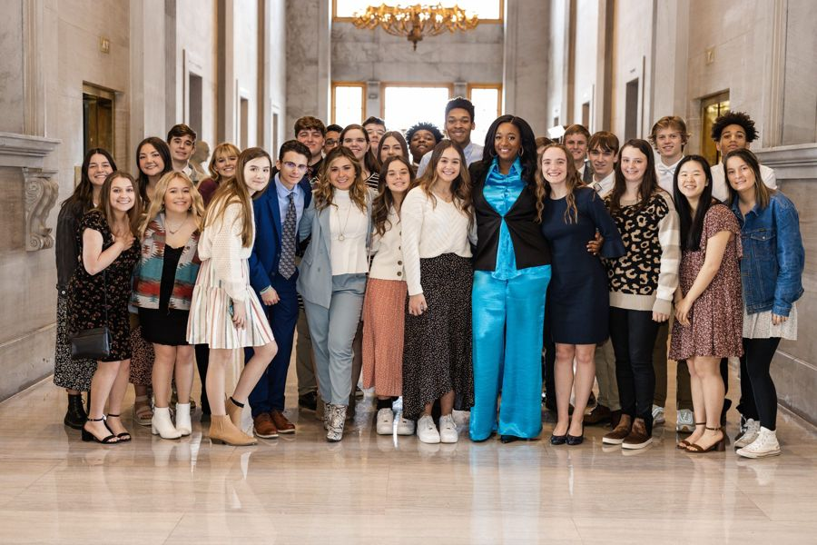
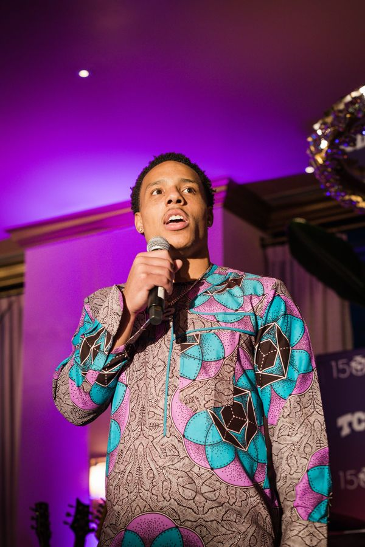
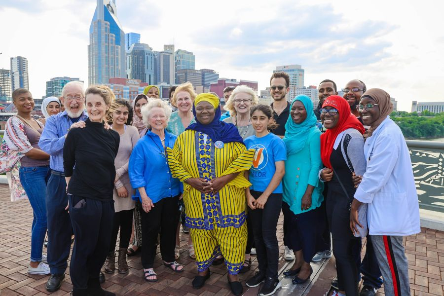

Arizona campaigns.Field, film and digital.
Arizona is a presidential battleground with a U.S. Senate race in 2028 and a long tradition of citizen ballot measures. Our founder directed Arizona's 2018 Invest in Ed petition drive.
Arizona elections in 2027 and 2028
Tucson elects its mayor and council in 2027. In 2028, Arizona's Class 3 U.S. Senate seat is on the November ballot, and the presidential preference election defaults to the Tuesday after March 15 under state law, which would be March 21, 2028, unless the date is changed. Phoenix is the state's largest media market and one of the largest in the country.
What field programs in Arizona need to know
Arizona voters can make laws and amend the constitution by petition. The current thresholds on the Secretary of State's site are 255,949 valid signatures for a statutory initiative and 383,923 for a constitutional amendment, and they reset after each governor's race. Arizona bans paying circulators by the signature, a rule the Arizona Supreme Court upheld in 2023, and paid and out-of-state circulators must register with the Secretary of State. Voter registration drives do not require notification or training.
Our work in Arizona and the region
Our founder was project director for the 2018 Invest in Ed petition drive in Arizona, a statewide education-funding initiative. Leo Operations brings that petition experience, plus field, video and photo, to Arizona campaigns.
Everythingyou need.
Who wework with.

Elected officialsTN State Senator – London Lamar
Organizations & brandsNBA Memphis GrizzliesCampaignsMike Bloomberg For PresidentElected officialsDistrict Attorney of Nashville, TN – Glenn Funk
Metro & cityCouncilwoman At-Large – Zulfat SuaraMetro & cityCouncilwoman At-Large – Olivia HillQuestions, answered.
Can you run a petition drive in Arizona?
Yes. Our founder directed Arizona's 2018 Invest in Ed petition drive, and we build every drive around Arizona's circulator registration and pay rules.
How many signatures does an Arizona initiative need?
Currently 255,949 for a statutory initiative and 383,923 for a constitutional amendment, per the Secretary of State. The thresholds reset after each governor's race.
Is there a U.S. Senate race in Arizona in 2028?
Yes. Arizona's Class 3 Senate seat is on the November 7, 2028 ballot.
Ready towin?
Tell us what you’re running for, building or launching. We’ll tell you how we make people remember it.
Email Leo Operations →